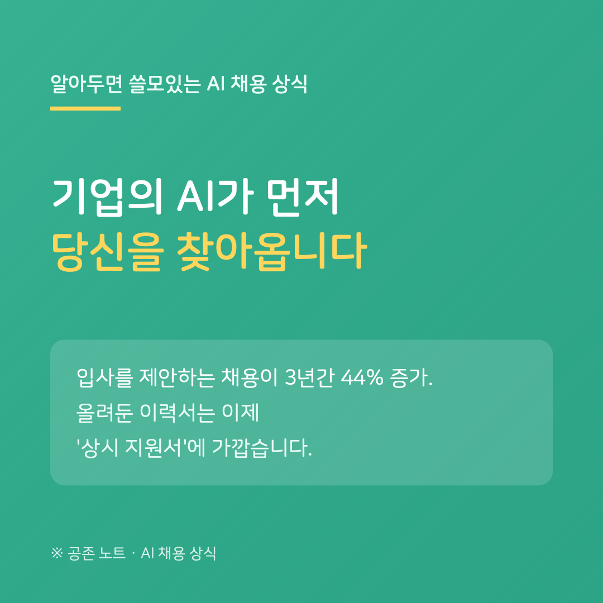

지난번에 취업포털이 'AI 취업 도우미'로 바뀌고 있다는 이야기를 전했습니다. 오늘은 그 후속입니다. 같은 포털이 이번엔 기업 쪽에도 AI를 팔기 시작했습니다.
잡코리아는 올해 3월 기업용 통합 채용 솔루션 '하이어링센터'를 공개했습니다. 그 안의 'AI 탤런트 에이전트'는 채용담당자가 자연어로 원하는 인재를 설명하면, 채용 맥락을 이해해 후보자를 추천하고 추천한 이유까지 함께 제시합니다.
배경에는 채용 방식의 변화가 있습니다. 잡코리아에 따르면 기업이 구직자에게 먼저 입사를 제안하는 '아웃바운드 채용'이 최근 3년간 44% 늘었습니다. 지원서를 내고 기다리는 게 아니라, 올려둔 프로필이 먼저 검색되는 흐름입니다.
구직자에게 의미는 두 가지입니다. 하나, 플랫폼에 올려둔 이력서는 이제 '보관함'이 아니라 기업 AI가 수시로 읽는 '상시 지원서'에 가깝습니다. 방치해 둔 옛 프로필도 검색 대상이 될 수 있으니, 최신 상태로 두거나 공개 범위 설정을 한 번 확인해 두세요. 둘, 키워드보다 맥락을 읽는 방식이라면, 단어 나열보다 경험을 구체적으로 서술한 프로필이 유리할 수 있습니다.
지원 버튼을 누르기 전에 검색은 이미 시작되는 시대 — 프로필 관리가 사실상 첫 전형입니다.
---
※ 잡코리아 발표 및 언론 보도(2026. 3~4.) 기준이며, 서비스 구성은 달라질 수 있습니다. 44%는 잡코리아 플랫폼 데이터 기준 수치입니다.
공존 노트 · AI가 당신을 평가하는 시대, 구직자를 위한 안내서